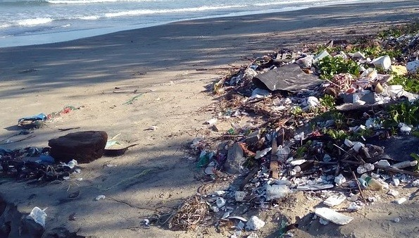

"상황은 심각하다. 생각보다 훨씬 더 심각하다. 기후변화의 진행 속도가 더디다는 주장은 판타지 동화 수준의 착각이다. -2050거주불능 지구"
"2019년 12월 안토니오 구테흐스 유엔(UN) 사무총장은 세계 각국의 기후 변화 대응 노력이 매우 부족했으며 기후 변화가 '복구 불가능한 수준'을 넘어설 수 있다고 경고했다.
이제는 좀 더 실현적인 움직임이 필요한 때이다."

온실가스 영향으로 인한 피해 사례가 늘어나면서 각국은 탄소배출량 저감을 위한 정책 실행에 순차적으로 돌입하게 되었고, 탈탄소화는 세계적인 추세로 자리잡았다.
탈탄소화란 에너지 효율이 개선되고 에너지 이용 형태가 친환경적으로 바뀌면서, 단위 생산량당 대기 중으로 방출되는 탄소의 양이 점차 감소하는 현상이다.